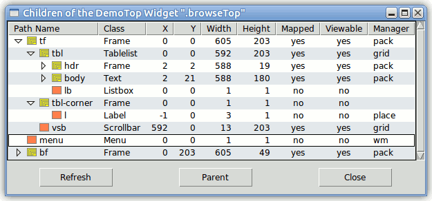

Tablelist is a library package for Tcl/Tk versions 8.0 or higher, written in pure Tcl/Tk code. It contains:
A tablelist is a multi-column listbox and tree widget. The width of
each column can be dynamic (i.e., just large enough to hold all its elements,
including the header) or static (specified in characters or pixels).
The columns are, per default, resizable. The alignment of each column
can be specified as left, right, or
center.
The columns, rows, and cells can be configured individually. Several
of the global and column-specific options refer to the headers, implemented
as label widgets. For instance, the -labelcommand option
specifies a Tcl command to be invoked when mouse button 1 is released over a
label. The most common value of this option sorts the items based on
the respective column.
The Tablelist package provides a great variety of tree styles controlling the look & feel of the column that displays the tree hierarchy with the aid of indentations and expand/collapse controls.
Interactive editing of the elements of a tablelist widget can be enabled for individual cells and for entire columns. A great variety of widgets from the Tk core and from the packages tile, BWidget, Iwidgets, combobox, ctext, and Mentry (or Mentry_tile) is supported for being used as embedded edit window. In addition, a rich set of keyboard bindings is provided for a comfortable navigation between the editable cells.
The Tcl command corresponding to a tablelist widget is very similar to the
one associated with a normal listbox. There are column-, row-, and
cell-specific counterparts of the configure and
cget subcommands (columnconfigure,
rowconfigure, cellconfigure, ...). They can
be used, among others, to insert images into the cells and the header labels,
or to insert embedded windows into the cells. The index,
nearest, and see command options refer to the rows,
but similar subcommands are provided for the columns and cells
(columnindex, cellindex, ...). The items can
be sorted with the sort, sortbycolumn, and
sortbycolumnlist command options.
The bindings defined for the body of a tablelist widget make it behave
just like a normal listbox. This includes the support for the virtual
event <<ListboxSelect>> (which is equivalent to
<<TablelistSelect>>). In addition, versions
2.3 or higher of the widget callback package Wcb (written in pure Tcl/Tk code
as well) can be used to define callbacks for the activate,
selection set, and selection
clear commands, and Wcb versions 3.0 or higher also support
callbacks for the activatecell, cellselection
set, and cellselection clear
commands. The download location of Wcb is
http://www.nemethi.de
Tablelist is available for free download from the same URL as Wcb.
The distribution file is tablelist5.14.tar.gz for UNIX and
tablelist5_14.zip for Windows. These files contain the
same information, except for the additional carriage return character
preceding the linefeed at the end of each line in the text files for
Windows.
Tablelist is also included in tklib, which has the address
http://core.tcl.tk/tklib
Install the package as a subdirectory of one of the directories given by
the auto_path variable. For example, you can install it as
a directory at the same level as the Tcl and Tk script libraries. The
locations of these library directories are given by the
tcl_library and tk_library variables,
respectively.
To install Tablelist on UNIX, cd to the desired
directory and unpack the distribution file
tablelist5.14.tar.gz:
gunzip -c tablelist5.14.tar.gz | tar -xf -
This command will create a directory named tablelist5.14,
with the subdirectories demos, doc, and
scripts.
On Windows, use WinZip or some other program capable of unpacking
the distribution file tablelist5_14.zip into the directory
tablelist5.14, with the subdirectories demos,
doc, and scripts.
The file tablelistEdit.tcl in the scripts
directory is only needed for applications making use of interactive cell
editing. Similarly, the file tablelistMove.tcl in the same
directory is only required for scripts invoking the move or
movecolumn command. Finally, the file
tablelistThemes.tcl is only needed for applications using the
package Tablelist_tile (see next section).
Next, you should check the exact version number of your Tcl/Tk
distribution, given by the tcl_patchLevel and
tk_patchLevel variables. If you are using Tcl/Tk version
8.2.X, 8.3.0 - 8.3.2, or 8.4a1, then you should upgrade your Tcl/Tk
distribution to a higher release. This is because a bug in these Tcl
versions (fixed in Tcl 8.3.3 and 8.4a2) causes excessive memory use when
calling info exists on non-existent array elements,
and Tablelist makes a lot of invocations of this command.
If for some reason you cannot upgrade your Tcl/Tk version, then you should
execute the Tcl script repair.tcl in the directory
scripts. This script makes backup copies of several files
contained in this directory, and then creates new versions of them by
replacing all invocations of info exists for array
elements with a call to the helper procedure
arrElemExists. The patched files work with all Tcl/Tk
releases starting with 8.0, but the original ones have a much better
performance.
Notice that in tklib the Tablelist demos directory is
replaced with the subdirectory tablelist of the
examples directory. Please take this into account when
reading the examples below.
The Tablelist distribution provides two packages, called Tablelist
and Tablelist_tile. The main difference between the two is that
Tablelist_tile enables the tile-based, theme-specific appearance of tablelist
widgets; this package requires Tcl/Tk 8.4 or higher and tile 0.6 or
higher. It is not possible to use both packages in one and the same
application, because both are implemented in the same tablelist
namespace and provide identical commands.
To be able to access the commands and variables defined in the package Tablelist, your scripts must contain one of the lines
package require tablelist ?version? package require Tablelist ?version?
You can use either one of the two statements above because the file
tablelist.tcl contains both lines
package provide tablelist ... package provide Tablelist ...
Likewise, to be able to access the commands and variables defined in the package Tablelist_tile, your scripts must contain one of the lines
package require tablelist_tile ?version? package require Tablelist_tile ?version?
Again, you can use either one of the two statements above because the file
tablelist_tile.tcl contains both lines
package provide tablelist_tile ... package provide Tablelist_tile ...
You are free to remove one of the above lines from
tablelist.tcl and tablelist_tile.tcl, respectively,
if you want to prevent the corresponding packages from making themselves
known under two different names each. Of course, by doing so you
restrict the argument of package require to a single
name per package.
Please note that ActiveTcl versions 8.5 and later use a modified
package mechanism, which only exports the all-lowercase names
tablelist and tablelist_tile.
REMARK: If you have an earlier Tablelist version as part of
ActiveTcl 8.5 or above and the new Tablelist release 5.14, then it is highly
recommended to specify the version number 5.14 in the
package require command, because otherwise the interpreter
will load the old Tablelist version included in ActiveTcl as Tcl
Module. The examples below use the
statement package require tablelist 5.14, and their
tile-based counterparts invoke the command package require
tablelist_tile 5.14.
Since the packages Tablelist and Tablelist_tile are implemented in the
tablelist namespace, you must either invoke the
namespace import tablelist::pattern ?tablelist::pattern ...?
command to import the procedures you need, or use qualified names
like tablelist::tablelist. In the examples below we have
chosen the latter approach.
To access Tablelist variables, you must use qualified
names. There are only three Tablelist variables (and one more when
using Tablelist_tile) that are designed to be accessed outside the namespace
tablelist:
tablelist::version holds the current version
number of the Tablelist and Tablelist_tile packages.tablelist::library holds the location of the
Tablelist installation directory.tablelist::usingTile has the value
0 in the package Tablelist and the value 1 in
Tablelist_tile.tablelist::themeDefaults holds
the theme-specific default values of a series of Tablelist configuration
options.A tablelist widget consists of a body (containing the items) and a header (displaying the column titles). Both components are contained in a hull, implemented as a frame. The header has a rather complex structure, consisting mainly of frame and label widgets. While in the Tablelist package all of these components are Tk widgets, the Tablelist_tile package uses both Tk and tile frame and label widgets. Due to several incompatibilities between Tk and tile, it is currently not possible to replace all Tk widgets making up a tablelist with their tile counterparts.
From the above it follows that the package Tablelist_tile will only
work as expected if the Tk frame and label commands
haven't been overridden by using namespace import -force
ttk::* at global scope. While earlier tile releases
suggested using this command at global scope for the really adventurous, in
newer tile versions this is considered a Really Bad Idea, causing many things
to break. Instead, you should explicitly invoke
ttk::frame, ttk::label, etc. whenever you want to
use a tile widget.
Overriding some other Tk widgets at global scope may be equally dangerous when using various widgets from the Tk core and from the packages BWidget, Iwidgets, combobox (by Bryan Oakley), ctext, and Mentry for interactive cell editing, because these packages expect Tk widgets, which may not always be replaced by their tile counterparts.
Another restriction to be taken into account (as of tile version 0.8) is
due to the fact that the (ttk::)style theme use
command can only be used to set the current theme, but not to retrieve
it. For this reason, the package Tablelist_tile makes use of the
variable ttk::currentTheme or tile::currentTheme
(depending on the tile version), which is set by the
ttk::setTheme or tile::setTheme procedure.
From this it follows that the tile-based tablelist widgets will only have
the expected appearance if the platform-specific default theme is either left
unchanged or replaced with another theme by invoking the procedure
ttk::setTheme or tile::setTheme, depending on the
current tile version. (See also the tablelist::setTheme command.)
After these cautions concerning the use of tile, the rest of this section describes the differences between the packages Tablelist and Tablelist_tile.
The Tablelist_tile package checks whether the required Tcl, Tk, and tile versions are present, by executing the commands
package require Tcl 8.4
package require Tk 8.4
if {$::tk_version < 8.5 || [regexp {^8\.5a[1-5]$} $::tk_patchLevel]} {
package require tile 0.6
}
The last command above reflects the fact that, beginning with Tk 8.5a6, tile is integrated into the Tk core and therefore it should only be loaded explicitly when using an earlier Tk version.
Apart from this and the _tile suffix in the
package require command, the only difference (from the
programmer's point of view) between the packages Tablelist and Tablelist_tile
is related to the supported configuration options: The
-highlightbackground, -highlightcolor,
-highlightthickness, -labelbackground,
-labelactivebackground, -labelactiveforeground,
-labeldisabledforeground, and -labelheight options
(the latter at both widget and column levels), present in the Tablelist
package, are not supported by Tablelist_tile. The first three are
standard Tk widget options that are not available for tile widgets. The
-labelbackground option stands for the -background
option of the column labels, and current versions of the tile engine don't
support setting the background color for these widgets with a special header
layout. The remaining options stand for the
-activebackground, -activeforeground,
-disabledforeground, and -height options of the
column labels, and these configuration options are not supported for tile
label widgets.
Also, take into account that in some themes, setting the
-labelborderwidth option (at widget or column level) to a value
other than the default might be ignored by tile and thus could cause
alignment problems. This is because the border of tile widgets is drawn
with theme-specific methods, which will not always produce the results known
from Tk widgets.
Finally, notice that, when using the tileqt theme, the
version number of the tile::theme::tileqt package must be 0.4 or
higher, and tileqt itself won't work with tile versions earlier
than 0.7.
The file config.tcl in the demos directory
contains a procedure demo::displayConfig that displays the
configuration options of an arbitrary widget in a tablelist contained in a
newly created top-level widget and allows you to edit these options.
This procedure can prove to be quite useful during interactive GUI
development. To test it, start wish and evaluate the file
by using the source command as follows:
wish was started in the demos directory
then it is sufficient to enter
source config.tcl
wish was started in some other directory then you can
use the tablelist::library variable to find the location of
the file. For example, assuming that your Tablelist installation has
the directory structure described in the How to
install it? section, the required commands are:
package require tablelist 5.14 source [file join $tablelist::library demos config.tcl]
In both cases, the script will print the following message to
stdout:
To display the configuration options of an arbitrary widget, enter
demo::displayConfig <widgetName>
The result looks like in the following figure:
It is assumed that the Tcl command associated with the widget specified by
<widgetName> has a configure subcommand
which, when invoked without any argument, returns a list describing all of
the available configuration options for the widget, in the common format
known from the standard Tk widgets. The
demo::displayConfig procedure inserts the items of this list
into a scrolled tablelist with 5 dynamic-width columns and interactive sort
capability, and returns the name of the newly created tablelist widget:
package require tablelist 5.14
namespace eval demo {
#
# Get the current windowing system ("x11", "win32", "classic", or "aqua")
# and add some entries to the Tk option database for the following
# widget hierarchy within a top-level widget of the class DemoTop:
#
# Name Class
# -----------------------------
# tf Frame
# tbl Tabellist
# vsb, hsb Scrollbar
# bf Frame
# b1, b2, b3 Button
#
variable winSys
if {[catch {tk windowingsystem} winSys] != 0} {
switch $::tcl_platform(platform) {
unix { set winSys x11 }
windows { set winSys win32 }
macintosh { set winSys classic }
}
}
if {[string compare $winSys "x11"] == 0} {
#
# Create the font TkDefaultFont if not yet present
#
catch {font create TkDefaultFont -family Helvetica -size -12}
option add *DemoTop*Font TkDefaultFont
option add *DemoTop*selectBackground #678db2
option add *DemoTop*selectForeground white
} else {
option add *DemoTop.tf.borderWidth 1
option add *DemoTop.tf.relief sunken
option add *DemoTop.tf.tbl.borderWidth 0
option add *DemoTop.tf.tbl.highlightThickness 0
}
option add *DemoTop.tf.tbl.background white
option add *DemoTop.tf.tbl.stripeBackground #e4e8ec
option add *DemoTop.tf.tbl.setGrid yes
option add *DemoTop.tf.tbl*Entry.background white
option add *DemoTop.bf.Button.width 10
}
#------------------------------------------------------------------------------
# demo::displayConfig
#
# Displays the configuration options of the widget w in a tablelist widget
# contained in a newly created top-level widget. Returns the name of the
# tablelist widget.
#------------------------------------------------------------------------------
proc demo::displayConfig w {
if {![winfo exists $w]} {
bell
tk_messageBox -title "Error" -icon error -message \
"Bad window path name \"$w\""
return ""
}
#
# Create a top-level widget of the class DemoTop
#
set top .configTop
for {set n 2} {[winfo exists $top]} {incr n} {
set top .configTop$n
}
toplevel $top -class DemoTop
wm title $top "Configuration Options of the [winfo class $w] Widget \"$w\""
#
# Create a scrolled tablelist widget with 5 dynamic-width
# columns and interactive sort capability within the top-level
#
set tf $top.tf
frame $tf
set tbl $tf.tbl
set vsb $tf.vsb
set hsb $tf.hsb
tablelist::tablelist $tbl \
-columns {0 "Command-Line Name"
0 "Database/Alias Name"
0 "Database Class"
0 "Default Value"
0 "Current Value"} \
-labelcommand tablelist::sortByColumn -sortcommand demo::compareAsSet \
-editendcommand demo::applyValue -height 15 -width 100 -stretch all \
-xscrollcommand [list $hsb set] -yscrollcommand [list $vsb set]
if {[$tbl cget -selectborderwidth] == 0} {
$tbl configure -spacing 1
}
$tbl columnconfigure 3 -maxwidth 30
$tbl columnconfigure 4 -maxwidth 30 -editable yes
scrollbar $vsb -orient vertical -command [list $tbl yview]
scrollbar $hsb -orient horizontal -command [list $tbl xview]
#
# Create three buttons within a frame child of the top-level widget
#
set bf $top.bf
frame $bf
set b1 $bf.b1
set b2 $bf.b2
set b3 $bf.b3
button $b1 -text "Refresh" -command [list demo::putConfig $w $tbl]
button $b2 -text "Sort as Set" -command [list $tbl sort]
button $b3 -text "Close" -command [list destroy $top]
#
# Manage the widgets
#
grid $tbl -row 0 -rowspan 2 -column 0 -sticky news
variable winSys
if {[string compare $winSys "aqua"] == 0} {
grid [$tbl cornerpath] -row 0 -column 1 -sticky ew
grid $vsb -row 1 -column 1 -sticky ns
} else {
grid $vsb -row 0 -rowspan 2 -column 1 -sticky ns
}
grid $hsb -row 2 -column 0 -sticky ew
grid rowconfigure $tf 1 -weight 1
grid columnconfigure $tf 0 -weight 1
pack $b1 $b2 $b3 -side left -expand yes -pady 10
pack $bf -side bottom -fill x
pack $tf -side top -expand yes -fill both
#
# Populate the tablelist with the configuration options of the given widget
#
putConfig $w $tbl
return $tbl
}
The procedure invokes the tablelist::tablelist command to create a
tablelist widget. The value of the -columns option passed to this
command specifies the widths, titles, and alignments of the 5 columns.
The width of each column is given as 0, specifying that the
column's width is to be made just large enough to hold all the elements in
the column, including its title, which is the string following the
width. We have omitted the alignment specifications (which can
optionally follow the titles), because the columns shall all be
left-justified.
Since all columns are of dynamic width and left-aligned, instead of
-columns we could have used the -columntitles option as
follows:
tablelist::tablelist $tbl \
-columntitles {"Command-Line Name"
"Database/Alias Name"
"Database Class"
"Default Value"
"Current Value"} \
. . .
The command tablelist::sortByColumn,
specified as the value of the -labelcommand option, will be
invoked whenever mouse button 1 is released over one of the labels.
This command sorts the items based on the column corresponding to that label,
in the right order, by invoking the sortbycolumn subcommand of the
Tcl command associated with the tablelist widget.
As seen from the creation of the button displaying the text
"Sort as Set", the items will also be sorted by invoking
the sort
subcommand. This makes it necessary to specify a command to be used for
the comparison of the items, as the value of the -sortcommand option. In
our example this is the demo::compareAsSet procedure shown
below.
The -editendcommand option
specifies the command to be invoked automatically whenever the interactive
editing of a cell's contents is finished and the final contents of the
temporary embedded entry widget used for the editing are different from its
original one. Per default, the elements of a tablelist widget can only
be edited programmatically, but we enable the interactive editing for the
cells of the last column with the aid of the -editable column configuration
option.
By specifying the value all for the -stretch configuration option we
make sure that all of the columns will be stretched to eliminate the blank
space that might appear at the right of the table.
If the default value of the -selectborderwidth option is
0 (this is the case on the Windows and Macintosh platforms, and
also in an X11 envronment with Tk 8.5 or above) then we use the
-spacing option to
provide some additional space above and below the rows.
For the last two columns of the tablelist we use the -maxwidth column configuration
option, to make sure that the dynamic widths of these columns won't exceed 30
average-width characters.
Besides the options given on the command line, our tablelist widget will
automatically inherit the ones contained in the Tk option database entries
specified in the namespace initialization preceding the
demo::displayConfig procedure. The database name
stripeBackground corresponds to the -stripebackground
configuration option. According to this entry, every other row of the
tablelist widget will be displayed in the background color
#e4e8ec, which improves the readability of the items and gives
the widget a nice appearance.
The option database entries given for the windowing systems other than
x11 are implicitly used when managing the tablelist widget and
the two scrollbars with the aid of grid. Notice how the
cornerpath
subcommand enables us to achieve a native look & feel with respect to the
vertical scrollbar on the windowing system aqua.
We populate the tablelist by invoking the demo::putConfig
procedure discussed below. The same script is associated with the
Refresh button, as the value of its -command
configuration option. This procedure is implemented as follows:
#------------------------------------------------------------------------------
# demo::putConfig
#
# Outputs the configuration options of the widget w into the tablelist widget
# tbl.
#------------------------------------------------------------------------------
proc demo::putConfig {w tbl} {
if {![winfo exists $w]} {
bell
tk_messageBox -title "Error" -icon error -message \
"Bad window path name \"$w\"" -parent [winfo toplevel $tbl]
return ""
}
#
# Display the configuration options of w in the tablelist widget tbl
#
$tbl delete 0 end
foreach configSet [$w configure] {
#
# Insert the list configSet into the tablelist widget
#
$tbl insert end $configSet
if {[llength $configSet] == 2} {
$tbl rowconfigure end -foreground gray50 -selectforeground gray75
$tbl cellconfigure end -editable no
} else {
#
# Change the colors of the first and last cell of the row
# if the current value is different from the default one
#
set default [lindex $configSet 3]
set current [lindex $configSet 4]
if {[string compare $default $current] != 0} {
foreach col {0 4} {
$tbl cellconfigure end,$col \
-foreground red -selectforeground yellow
}
}
}
}
$tbl sortbycolumn 0
$tbl activate 0
$tbl attrib widget $w
}
After deleting the current items of the tablelist widget tbl,
the procedure inserts the items of the list returned by the
configure subcommand of the Tcl command associated with the
widget w. For each option that is merely an abbreviated
form of some other one, we use the rowconfigure tablelist
subcommand to change the normal and selection foreground colors of the item
just appended, and we disable the interactive editing in the last inserted
cell by using the -editable cell configuration
option. The cellconfigure tablelist
operation is also invoked for each real option whose current value is
different from the default one, to change the values of the
-foreground and -selectforeground options of the
cells no. 0 and 4, containing the command-line name of the option and its
current value.
Each tablelist widget may have any number of private attributes,
which can be set and retrieved with the aid of the attrib subcommand of the Tcl command
corresponding to the widget. The demo::putConfig procedure
sets the widget attribute to the name of the widget whose
options are displayed in the tablelist.
The implementation of the comparison command
demo::compareAsSet mentioned above is quite simple:
#------------------------------------------------------------------------------
# demo::compareAsSet
#
# Compares two items of a tablelist widget used to display the configuration
# options of an arbitrary widget. The item in which the current value is
# different from the default one is considered to be less than the other; if
# both items fulfil this condition or its negation then string comparison is
# applied to the two option names.
#------------------------------------------------------------------------------
proc demo::compareAsSet {item1 item2} {
foreach {opt1 dbName1 dbClass1 default1 current1} $item1 \
{opt2 dbName2 dbClass2 default2 current2} $item2 {
set changed1 [expr {[string compare $default1 $current1] != 0}]
set changed2 [expr {[string compare $default2 $current2] != 0}]
if {$changed1 == $changed2} {
return [string compare $opt1 $opt2]
} elseif {$changed1} {
return -1
} else {
return 1
}
}
}
Finally, here is the implementation of the demo::applyValue
procedure, specified as the value of the -editendcommand
option:
#------------------------------------------------------------------------------
# demo::applyValue
#
# Applies the new value of the configuraton option contained in the given row
# of the tablelist widget tbl to the widget whose options are displayed in it,
# and updates the colors of the first and last cell of the row.
#------------------------------------------------------------------------------
proc demo::applyValue {tbl row col text} {
#
# Try to apply the new value of the option contained in
# the given row to the widget whose options are displayed
# in the tablelist; reject the value if the attempt fails
#
set w [$tbl attrib widget]
set opt [$tbl cellcget $row,0 -text]
if {[catch {$w configure $opt $text} result] != 0} {
bell
tk_messageBox -title "Error" -icon error -message $result \
-parent [winfo toplevel $tbl]
$tbl rejectinput
return ""
}
#
# Replace the new option value with its canonical form and
# update the colors of the first and last cell of the row
#
set text [$w cget $opt]
set default [$tbl cellcget $row,3 -text]
if {[string compare $default $text] == 0} {
foreach col {0 4} {
$tbl cellconfigure $row,$col \
-foreground "" -selectforeground ""
}
} else {
foreach col {0 4} {
$tbl cellconfigure $row,$col \
-foreground red -selectforeground yellow
}
}
return $text
}
The procedure retrieves the name of the widget whose options are displayed
in the tablelist, as the value of its widget attribute, and
invokes the cellcget
tablelist subcommand to get the name of the option specified in the first
cell of the row whose last element was just edited. Next, it tries to
apply the new value of the option to the widget, and invokes the
rejectinput
subcommand if the attempt fails. Otherwise it replaces the new option
value with its canonical form and updates the normal and selection foreground
colors of the cells no. 0 and 4. The canonical form of the option value
is given by the cget subcommand of the Tcl command associated
with that widget. For example, a boolean value will always be replaced
with 1 or 0, even if the entry contains the string
yes or no. The procedure returns this
canonical option value, thus making sure that the latter will become the new
contents of the cell that was just edited.
The files browse.tcl and browseTree.tcl in the
demos directory contain a procedure
demo::displayChildren that displays information about the
children of an arbitrary widget in a tablelist contained in a newly created
top-level widget. To test it, start wish and evaluate the
chosen file by using the source command, in a similar way as in
the case of the previous example.
Both scripts will print the following message to stdout:
To display information about the children of an arbitrary widget, enter
demo::displayChildren <widgetName>
The tablelist created by the procedure demo::displayChildren
in the file browse.tcl is a multi-column listbox:
The tablelist created by the procedure of the same name in the file
browseTree.tcl is a multi-column tree widget:

The demo::displayChildren command inserts some data of the
children of the widget specified by <widgetName> into a
vertically scrolled tablelist with 9 dynamic-width columns and interactive
sort capability, and returns the name of the newly created tablelist
widget. By double-clicking an item or invoking the first entry of a
pop-up menu within the body of the tablelist, you can display the data of the
children of the widget corresponding to the selected item, and with the
second menu entry you can display its configuration options (see the previous example for details). To go one level up,
click on the Parent button.
There is a lot of code common to the scripts browse.tcl and
browseTree.tcl. We will restrict the description below to
the second one, which requires Tk 8.3 or later, due to the use of several
tree-related tablelist options and subcommands.
package require Tk 8.3
package require tablelist 5.14
namespace eval demo {
variable dir [file dirname [info script]]
#
# Create two images, needed in the procedure putChildren
#
variable leafImg [image create bitmap -file [file join $dir leaf.xbm] \
-background coral -foreground gray50]
variable compImg [image create bitmap -file [file join $dir comp.xbm] \
-background yellow -foreground gray50]
}
source [file join $demo::dir config.tcl]
#------------------------------------------------------------------------------
# demo::displayChildren
#
# Displays information on the children of the widget w in a tablelist widget
# contained in a newly created top-level widget. Returns the name of the
# tablelist widget.
#------------------------------------------------------------------------------
proc demo::displayChildren w {
if {![winfo exists $w]} {
bell
tk_messageBox -title "Error" -icon error -message \
"Bad window path name \"$w\""
return ""
}
#
# Create a top-level widget of the class DemoTop
#
set top .browseTop
for {set n 2} {[winfo exists $top]} {incr n} {
set top .browseTop$n
}
toplevel $top -class DemoTop
#
# Create a vertically scrolled tablelist widget with 9 dynamic-width
# columns and interactive sort capability within the top-level
#
set tf $top.tf
frame $tf
set tbl $tf.tbl
set vsb $tf.vsb
tablelist::tablelist $tbl \
-columns {0 "Path Name" left
0 "Class" left
0 "X" right
0 "Y" right
0 "Width" right
0 "Height" right
0 "Mapped" center
0 "Viewable" center
0 "Manager" left} \
-expandcommand demo::expandCmd -labelcommand demo::labelCmd \
-yscrollcommand [list $vsb set] -setgrid no -width 0
if {[$tbl cget -selectborderwidth] == 0} {
$tbl configure -spacing 1
}
foreach col {2 3 4 5} {
$tbl columnconfigure $col -sortmode integer
}
foreach col {6 7} {
$tbl columnconfigure $col -formatcommand demo::formatBoolean
}
scrollbar $vsb -orient vertical -command [list $tbl yview]
#
# When displaying the information about the children of any
# ancestor of the label widgets, the widths of some of the
# labels and thus also the widths and x coordinates of some
# children may change. For this reason, make sure the items
# will be updated after any change in the sizes of the labels
#
foreach l [$tbl labels] {
bind $l <Configure> [list demo::updateItemsDelayed $tbl]
}
bind $tbl <Configure> [list demo::updateItemsDelayed $tbl]
#
# Create a pop-up menu with two command entries; bind the script
# associated with its first entry to the <Double-1> event, too
#
set menu $top.menu
menu $menu -tearoff no
$menu add command -label "Display Children" \
-command [list demo::putChildrenOfSelWidget $tbl]
$menu add command -label "Display Config" \
-command [list demo::dispConfigOfSelWidget $tbl]
set bodyTag [$tbl bodytag]
bind $bodyTag <Double-1> [list demo::putChildrenOfSelWidget $tbl]
bind $bodyTag <<Button3>> [bind TablelistBody <Button-1>]
bind $bodyTag <<Button3>> +[bind TablelistBody <ButtonRelease-1>]
bind $bodyTag <<Button3>> +[list demo::postPopupMenu $top %X %Y]
#
# Create three buttons within a frame child of the top-level widget
#
set bf $top.bf
frame $bf
set b1 $bf.b1
set b2 $bf.b2
set b3 $bf.b3
button $b1 -text "Refresh"
button $b2 -text "Parent"
button $b3 -text "Close" -command [list destroy $top]
#
# Manage the widgets
#
. . .
#
# Populate the tablelist with the data of the given widget's children
#
putChildren $w $tbl root
return $tbl
}
The procedure invokes the tablelist::tablelist command to create a
tablelist widget. The value of the -columns option passed to this
command specifies the widths, titles, and alignments of the 9 columns.
The width of each column is given as 0, specifying that the
column's width is to be made just large enough to hold all the elements in
the column, including its title, which is the string following the
width. Each of the titles is followed by an alignment, which indicates
how to justify both the elements and the title of the respective column.
We want to display not only the data of the given widget's children, but
also those of its further descendants. To this end, we need a command
to be invoked whenever an item corresponding to a widget with children gets
expanded. This command is specified as the value of the -expandcommand option.
As discussed later, the demo::expandCmd procedure will insert
the children of the row that is about to be expanded, if it has no children
yet.
The command demo::labelCmd, specified as the value of the
-labelcommand
option, will be invoked whenever mouse button 1 is released over one of the
labels. We will discuss this procedure later.
We specify the value 0 for the widget's -width option, meaning that the
tablelist's width shall be made just large enough to hold all its
columns.
After creating the tablelist widget, we make sure that the elements of its
columns 2, 3, 4, and 5 (displaying the x and y coordinates as well as the
widths and heights of the children) will be compared as integers when sorting
the items based on one of these columns. We do this with the aid of the
columnconfigure tablelist
operation.
The same columnconfigure subcommand enables us to specify
that, when displaying the elements of columns 6 and 7 (having the titles
"Mapped" and "Viewable", respectively), the boolean
values 1 and 0 will be replaced with the strings
"yes" and "no", returned by the
demo::formatBoolean command shown below.
After creating the vertical scrollbar, we iterate over the elements of the
list containing the path names of all header labels of the tablelist widget,
returned by the labels
subcommand of the Tcl command corresponding to the widget. For each
element of the list, we bind the procedure
demo::updateItemsDelayed to the <Configure>
event. In this way we make sure the procedure will be invoked whenever
the header label indicated by that list element changes size.
The four invocations of the bind command following the
creation of the pop-up menu make use of a binding tag whose name depends on
the path name of the tablelist widget and is returned by the bodytag subcommand of the Tcl
command associated with the tablelist widget. The advantage of using
this tag instead of the path name of the tablelist's body is that this
binding tag is associated not only with the body but also with the separator
frames and with the labels displaying embedded images. This is
important in our example because we want to make sure the
<<Button3>> and <Double-1> events
will be handled in the same way within a label containing an embedded image
as in the rest of the tablelist's body. Both the <<Button3>> virtual
event (used in the first three bind commands) and the
TablelistBody
binding tag (used in the first binding script) are created by the Tablelist
package. The first three bind commands make sure that a
<<Button3>> virtual event will select and activate
the nearest item and will post a pop-up menu with two command entries that
refer to the widget described by that item.
We populate the tablelist by invoking the demo::putChildren
procedure, implemented as follows:
#------------------------------------------------------------------------------
# demo::putChildren
#
# Outputs the data of the children of the widget w into the tablelist widget
# tbl, as child items of the one identified by nodeIdx.
#------------------------------------------------------------------------------
proc demo::putChildren {w tbl nodeIdx} {
. . .
if {[string compare $nodeIdx "root"] == 0} {
set top [winfo toplevel $tbl]
wm title $top "Children of the [winfo class $w] Widget \"$w\""
$tbl resetsortinfo
$tbl delete 0 end
set row 0
} else {
set row [expr {$nodeIdx + 1}]
}
#
# Display the data of the children of the
# widget w in the tablelist widget tbl
#
variable leafImg
variable compImg
foreach c [winfo children $w] {
#
# Insert the data of the current child into the tablelist widget
#
set item {}
lappend item \
[winfo name $c] [winfo class $c] [winfo x $c] [winfo y $c] \
[winfo width $c] [winfo height $c] [winfo ismapped $c] \
[winfo viewable $c] [winfo manager $c]
$tbl insertchild $nodeIdx end $item
#
# Insert an image into the first cell of the row; mark the
# row as collapsed if the child widget has children itself
#
if {[llength [winfo children $c]] == 0} {
$tbl cellconfigure end,0 -image $leafImg
} else {
$tbl cellconfigure end,0 -image $compImg
$tbl collapse $row
}
$tbl rowattrib $row pathName $c
incr row
}
if {[string compare $nodeIdx "root"] == 0} {
#
# Configure the "Refresh" and "Parent" buttons
#
$top.bf.b1 configure -command [list demo::refreshView $w $tbl]
set b2 $top.bf.b2
set p [winfo parent $w]
if {[string compare $p ""] == 0} {
$b2 configure -state disabled
} else {
$b2 configure -state normal -command \
[list demo::putChildren $p $tbl root]
}
}
}
The last argument of this procedure indicates the tree node to become the
parent of the items displaying the data of the children of the widget passed
as first argument. If this parent is the invisible root
node then we first reset the sorting information by invoking the
resetsortinfo
tablelist subcommand and delete the current items of the tablelist widget
tbl. The procedure then iterates over the children of the
specified widget and inserts the items built from some data retrieved by
using the winfo command. Each new item is added to the end
of the parent node's list of children with the aid of the insertchild(ren)
subcommand.
For each child widget, we invoke the cellconfigure tablelist
operation to set the value of the -image option of the
corresponding row's first cell, containing the leaf name of the child.
In this way, the procedure inserts the image $leafImg or
$compImg into the first cell, depending on whether the child in
question is a leaf or a composite widget. (Remember that both images
were created outside this procedure, within the initialization of the
demo namespace.)
We mark every newly created row corresponding to a child widget that has
children itself as collapsed by invoking the collapse subcommand. This
will prepend an expand/collapse control to the contents of the first column,
whose column index 0 is the default value of the -treecolumn configuration
option.
We use the rowattrib tablelist subcommand to
remember the full path name of every child widget as a private attribute
associated with the corresponding tablelist row, because it will be needed at
several places later on.
As mentioned above, the demo::expandCmd procedure will be
invoked automatically when expanding a row that contains an expand/collapse
control:
------------------------------------------------------------------------------
# demo::expandCmd
#
# Outputs the data of the children of the widget whose leaf name is displayed
# in the first cell of the specified row of the tablelist widget tbl, as child
# items of the one identified by row.
#------------------------------------------------------------------------------
proc demo::expandCmd {tbl row} {
if {[$tbl childcount $row] == 0} {
set w [$tbl rowattrib $row pathName]
putChildren $w $tbl $row
#
# Apply the last sorting (if any) to the new items
#
$tbl refreshsorting $row
}
}
The procedure invokes the childcount subcommand to check
whether the children of the row that is about to be expanded have already
been inserted into the tablelist widget, and inserts them if this is not the
case. It also makes sure that the child items will be displayed in the
order corresponding to the last sorting (if any), with the aid of the
refreshsorting
tablelist subcommand. Any sorting (if needed) will only be performed on
the child items just inserted into the tablelist widget.
The demo::formatBoolean and demo::labelCmd
procedures mentioned above are trivial:
#------------------------------------------------------------------------------
# demo::formatBoolean
#
# Returns "yes" or "no", according to the specified boolean value.
#------------------------------------------------------------------------------
proc demo::formatBoolean val {
return [expr {$val ? "yes" : "no"}]
}
#------------------------------------------------------------------------------
# demo::labelCmd
#
# Sorts the contents of the tablelist widget tbl by its col'th column and makes
# sure the items will be updated 500 ms later (because one of the items might
# refer to a canvas containing the arrow that displays the sorting order).
#------------------------------------------------------------------------------
proc demo::labelCmd {tbl col} {
tablelist::sortByColumn $tbl $col
updateItemsDelayed $tbl
}
The command tablelist::sortByColumn sorts
the items of the tablelist widget by the specified column in the right order,
by invoking the sortbycolumn subcommand of the
Tcl command associated with the tablelist widget.
The implementation of the demo::updateItemsDelayed command,
invoked in this procedure and already encountered in the
demo::displayChildren procedure above, is quite simple:
#------------------------------------------------------------------------------
# demo::updateItemsDelayed
#
# Arranges for the items of the tablelist widget tbl to be updated 500 ms later.
#------------------------------------------------------------------------------
proc demo::updateItemsDelayed tbl {
#
# Schedule the demo::updateItems command for execution
# 500 ms later, but only if it is not yet pending
#
if {[string compare [$tbl attrib afterId] ""] == 0} {
$tbl attrib afterId [after 500 [list demo::updateItems $tbl]]
}
}
#------------------------------------------------------------------------------
# demo::updateItems
#
# Updates the items of the tablelist widget tbl.
#------------------------------------------------------------------------------
proc demo::updateItems tbl {
#
# Reset the tablelist's "afterId" attribute
#
$tbl attrib afterId ""
#
# Update the items
#
set rowCount [$tbl size]
for {set row 0} {$row < $rowCount} {incr row} {
set c [$tbl cellcget $row,0 -text]
if {![winfo exists $c]} {
continue
}
set item {}
lappend item \
[winfo name $c] [winfo class $c] [winfo x $c] [winfo y $c] \
[winfo width $c] [winfo height $c] [winfo ismapped $c] \
[winfo viewable $c] [winfo manager $c]
$tbl rowconfigure $row -text $item
}
#
# Repeat the last sort operation (if any)
#
$tbl refreshsorting
}
As already mentioned in the previous example,
each tablelist widget may have any number of private attributes, which can be
set and retrieved with the aid of the attrib subcommand of the Tcl command
corresponding to the widget. The afterId attribute is set
by the demo::updateItemsDelayed procedure when sheduling the
demo::updateItems command for execution 500 ms later, but only
if its value is an empty string. For this reason, the
demo::updateItems procedure resets this attribute. It also
makes use of the cellcget tablelist subcommand to
get the path names contained in the first cell of each row, and updates the
data of the children with the aid of the rowconfigure subcommand.
After updating the items, the procedure repeats the most recent sorting based
on a column (if there was one), with the aid of the refreshsorting
subcommand.
The procedures demo::putChildrenOfSelWidget,
demo::dispConfigOfSelWidget, and
demo::postPopupMenu (see demo::displayChildren) are
also straight-forward. For example, the
demo::putChildrenOfSelWidget command shown below makes use of
the curselection
subcommand to get the index of the selected row. More precisely,
curselection returns a list, but in our case this list will have
exactly one element, hence it can be used directly as the first component of
a cell index.
#------------------------------------------------------------------------------
# demo::putChildrenOfSelWidget
#
# Outputs the data of the children of the selected widget into the tablelist
# widget tbl.
#------------------------------------------------------------------------------
proc demo::putChildrenOfSelWidget tbl {
set w [$tbl cellcget [$tbl curselection],0 -text]
if {![winfo exists $w]} {
bell
tk_messageBox -title "Error" -icon error -message \
"Bad window path name \"$w\"" -parent [winfo toplevel $tbl]
return ""
}
if {[llength [winfo children $w]] == 0} {
bell
} else {
putChildren $w $tbl
}
}
The procedure demo::refreshView, associated with the
Refresh button, is implemented as follows:
#------------------------------------------------------------------------------
# demo::refreshView
#
# Redisplays the data of the children of the widget w in the tablelist widget
# tbl and restores the expanded states of the items as well as the vertical
# view.
#------------------------------------------------------------------------------
proc demo::refreshView {w tbl} {
#
# Save the vertical view and get the path names of
# the child widgets displayed in the expanded rows
#
set yView [$tbl yview]
foreach key [$tbl expandedkeys] {
set pathName [$tbl rowattrib $key pathName]
set expandedWidgets($pathName) 1
}
#
# Redisplay the data of the widget's (possibly changed) children and
# restore the expanded states of the children, along with the vertical view
#
putChildren $w $tbl root
restoreExpandedStates $tbl root expandedWidgets
$tbl yview moveto [lindex $yView 0]
}
Before redisplaying the tablelist's contents via
demo::putChildren, we get the full keys of the currently
expanded items with the aid of the expandedkeys tablelist
subcommand and insert the correspondig widget paths into the array
expandedWidgets. After redisplaying the data of the
(possibly changed) children of the widget given as first argument, we pass
this array to the demo::restoreExpandedStates procedure shown
below:
#------------------------------------------------------------------------------
# restoreExpandedStates
#
# Expands those children of the parent identified by nodeIdx that display the
# data of child widgets whose path names are the names of the elements of the
# array specified by the last argument.
#------------------------------------------------------------------------------
proc demo::restoreExpandedStates {tbl nodeIdx expandedWidgetsName} {
upvar $expandedWidgetsName expandedWidgets
foreach key [$tbl childkeys $nodeIdx] {
set pathName [$tbl rowattrib $key pathName]
if {[info exists expandedWidgets($pathName)]} {
$tbl expand $key -partly
restoreExpandedStates $tbl $key expandedWidgets
}
}
}
The procedure retrieves the list of full keys of the children of the
parent node indicated by nodeIdx, by means of the childkeys tablelist
subcommand. It then loops over this list, and for each key for which
the corresponding row was previously expanded, it invokes the expand tablelist subcommand and then
calls itself recursively to restore the expanded states of that row's
children.
The script dirViewer.tcl in the demos directory
displays the contents of the volumes mounted on the system (e.g., the root
/ on UNIX and the local drives on Windows) in a tablelist used
as multi-column tree widget:
By double-clicking an item or invoking the single entry of a pop-up menu within the body of the tablelist, you can display the contents of the folder corresponding to the selected item. To go one level up, click on the Parent button.
There are a lot of similarities between this script and the one discussed in the previous section. In the following we will only present a few procedures that invoke tablelist commands not encountered in the examples above:
package require Tk 8.3
package require tablelist 5.14
#
# Add some entries to the Tk option database
#
set dir [file dirname [info script]]
source [file join $dir option.tcl]
#
# Create three images
#
image create photo clsdFolderImg -file [file join $dir clsdFolder.gif]
image create photo openFolderImg -file [file join $dir openFolder.gif]
image create photo fileImg -file [file join $dir file.gif]
#------------------------------------------------------------------------------
# displayContents
#
# Displays the contents of the directory dir in a tablelist widget.
#------------------------------------------------------------------------------
proc displayContents dir {
#
# Create a scrolled tablelist widget with 3 dynamic-
# width columns and interactive sort capability
#
set tf .tf
frame $tf -class ScrollArea
set tbl $tf.tbl
set vsb $tf.vsb
set hsb $tf.hsb
tablelist::tablelist $tbl \
-columns {0 "Name" left
0 "Size" right
0 "Date Modified" left} \
-expandcommand expandCmd -collapsecommand collapseCmd \
-xscrollcommand [list $hsb set] -yscrollcommand [list $vsb set] \
-movablecolumns no -setgrid no -showseparators yes -height 20 -width 80
if {[$tbl cget -selectborderwidth] == 0} {
$tbl configure -spacing 1
}
$tbl columnconfigure 0 -formatcommand formatString -sortmode dictionary
$tbl columnconfigure 1 -formatcommand formatSize -sortmode integer
$tbl columnconfigure 2 -formatcommand formatString
scrollbar $vsb -orient vertical -command [list $tbl yview]
scrollbar $hsb -orient horizontal -command [list $tbl xview]
. . .
#
# Populate the tablelist with the contents of the given directory
#
$tbl sortbycolumn 0
putContents $dir $tbl root
}
The procedure displayContents creates the tablelist widget
and the two scrollbars as children of a frame of class
ScrollArea. For this class, the file
option.tcl, sourced into the main script, contains
some look & feel related settings similar to the ones encountered in our
first example:
if {[string compare $winSys "x11"] == 0} {
. . .
} else {
option add *ScrollArea.borderWidth 1
option add *ScrollArea.relief sunken
option add *ScrollArea.Tablelist.borderWidth 0
option add *ScrollArea.Tablelist.highlightThickness 0
. . .
}
The procedure specifies a value not only for the -expandcommand option of the
tablelist it creates, but also for its -collapsecommand
option. The latter will merely restore the image shown in the first
column to the one displaying a closed folder (see below).
#------------------------------------------------------------------------------
# putContents
#
# Outputs the contents of the directory dir into the tablelist widget tbl, as
# child items of the one identified by nodeIdx.
#------------------------------------------------------------------------------
proc putContents {dir tbl nodeIdx} {
. . .
if {[string compare $nodeIdx "root"] == 0} {
if {[string compare $dir ""] == 0} {
if {[llength [file volumes]] == 1} {
wm title . "Contents of the File System"
} else {
wm title . "Contents of the File Systems"
}
} else {
wm title . "Contents of the Directory \"[file nativename $dir]\""
}
$tbl delete 0 end
set row 0
} else {
set row [expr {$nodeIdx + 1}]
}
#
# Build a list from the data of the subdirectories and
# files of the directory dir. Prepend a "D" or "F" to
# each entry's name and modification date & time, for
# sorting purposes (it will be removed by formatString).
#
set itemList {}
if {[string compare $dir ""] == 0} {
foreach volume [file volumes] {
lappend itemList [list D[file nativename $volume] -1 D $volume]
}
} else {
foreach entry [glob -nocomplain -types {d f} -directory $dir *] {
if {[catch {file mtime $entry} modTime] != 0} {
continue
}
if {[file isdirectory $entry]} {
lappend itemList [list D[file tail $entry] -1 \
D[clock format $modTime -format "%Y-%m-%d %H:%M"] $entry]
} else {
lappend itemList [list F[file tail $entry] [file size $entry] \
F[clock format $modTime -format "%Y-%m-%d %H:%M"] ""]
}
}
}
#
# Sort the above list and insert it into the tablelist widget
# tbl as list of children of the row identified by nodeIdx
#
set itemList [$tbl applysorting $itemList]
$tbl insertchildlist $nodeIdx end $itemList
#
# Insert an image into the first cell of each newly inserted row
#
foreach item $itemList {
set name [lindex $item end]
if {[string compare $name ""] == 0} { ;# file
$tbl cellconfigure $row,0 -image fileImg
} else { ;# directory
$tbl cellconfigure $row,0 -image clsdFolderImg
$tbl rowattrib $row pathName $name
#
# Mark the row as collapsed if the directory is non-empty
#
if {[file readable $name] && [llength \
[glob -nocomplain -types {d f} -directory $name *]] != 0} {
$tbl collapse $row
}
}
incr row
}
. . .
}
The main difference between the procedure putContents above
and the procedure demo::putChildren
described in the previous section is related to the
way child items are inserted into the tablelist widget. Instead of
inserting them individually with the aid of the insertchild(ren) tablelist
subcommand, here we add the relevant data to a list of items and then invoke
the much more performant insertchildlist
subcommand. Also, instead of first inserting the items and then sorting
them via refreshsorting, we first
perform the necessary sortings on the above-mentioned list of items by
invoking the applysorting subcommand.
Again, this is much faster than sorting the already inserted child items.
This procedure also illustrates an effective technique based on the
-formatcommand column
configuration option: In the tablelist widget's internal list, the
names and modification times of the directories and files are preceded by a
D and F, respectively. This makes sure that
the directories will sort before the files (when sorting in ascending
order). When displaying the items, the Tablelist code will
automatically invoke the formatString procedure, which removes
the first character. Similarly, in the widget's internal list, the size
of a directory is set to -1, which sorts before the sizes of the
files. The formatSize procedure, invoked automatically
when displaying the items, replaces this value with an empty string:
#------------------------------------------------------------------------------
# formatString
#
# Returns the substring obtained from the specified value by removing its first
# character.
#------------------------------------------------------------------------------
proc formatString val {
return [string range $val 1 end]
}
#------------------------------------------------------------------------------
# formatSize
#
# Returns an empty string if the specified value is negative and the value
# itself in user-friendly format otherwise.
#------------------------------------------------------------------------------
proc formatSize val {
if {$val < 0} {
return ""
} elseif {$val < 1024} {
return "$val bytes"
} elseif {$val < 1048576} {
return [format "%.1f KB" [expr {$val / 1024.0}]]
} elseif {$val < 1073741824} {
return [format "%.1f MB" [expr {$val / 1048576.0}]]
} else {
return [format "%.1f GB" [expr {$val / 1073741824.0}]]
}
}
Besides its common task of inserting the children of the row to be
expanded, the expandCmd procedure shown below also changes the
image contained in the first column to the one displaying an open
folder. The collapseCmd procedure restores the image to
the one displaying a closed folder:
#------------------------------------------------------------------------------
# expandCmd
#
# Outputs the contents of the directory whose leaf name is displayed in the
# first cell of the specified row of the tablelist widget tbl, as child items
# of the one identified by row, and updates the image displayed in that cell.
#------------------------------------------------------------------------------
proc expandCmd {tbl row} {
if {[$tbl childcount $row] == 0} {
set dir [$tbl rowattrib $row pathName]
putContents $dir $tbl $row
}
if {[$tbl childcount $row] != 0} {
$tbl cellconfigure $row,0 -image openFolderImg
}
}
#------------------------------------------------------------------------------
# collapseCmd
#
# Updates the image displayed in the first cell of the specified row of the
# tablelist widget tbl.
#------------------------------------------------------------------------------
proc collapseCmd {tbl row} {
$tbl cellconfigure $row,0 -image clsdFolderImg
}
. . .
displayContents ""
The last line of the script invokes the procedure
displayContents with an empty string as argument, i.e., displays
the volumes mounted on the system.
The script styles.tcl in the demos directory
demonstrates some ways of making tablelist widgets smarter and improving the
readability of their items. It creates 8 tablelist widgets, shown in
the following figure:
Here is the relevant code segment:
#
# Create, configure, and populate 8 tablelist widgets
#
frame .f
for {set n 0} { $n < 8} {incr n} {
set tbl .f.tbl$n
tablelist::tablelist $tbl \
-columntitles {"Label 0" "Label 1" "Label 2" "Label 3"} \
-background white -height 4 -width 40 -stretch all
if {[$tbl cget -selectborderwidth] == 0} {
$tbl configure -spacing 1
}
switch $n {
1 {
$tbl configure -showseparators yes
}
2 {
$tbl configure -stripebackground #e4e8ec
}
3 {
$tbl configure -stripebackground #e4e8ec -showseparators yes
}
4 {
$tbl columnconfigure 1 -background LightYellow
$tbl columnconfigure 3 -background LightCyan
}
5 {
$tbl configure -showseparators yes
$tbl columnconfigure 1 -background LightYellow
$tbl columnconfigure 3 -background LightCyan
}
6 {
$tbl configure -stripebackground #e4e8ec
$tbl columnconfigure 1 -background LightYellow \
-stripebackground #e5e5c9
$tbl columnconfigure 3 -background LightCyan \
-stripebackground #c9e5e5
}
7 {
$tbl configure -stripebackground #e4e8ec -showseparators yes
$tbl columnconfigure 1 -background LightYellow \
-stripebackground #e5e5c9
$tbl columnconfigure 3 -background LightCyan \
-stripebackground #c9e5e5
}
}
foreach row {0 1 2 3} {
$tbl insert end \
[list "Cell $row,0" "Cell $row,1" "Cell $row,2" "Cell $row,3"]
}
}
The only configuration option used here but not discussed in the first
three examples (although already encountered in the previous one) is -showseparators. The
visual effect it produces looks nice both by itself and combined with
horizontal or vertical stripes, created by using the -stripebackground option
and the columnconfigure subcommand,
respectively.
The scripts tileWidgets.tcl, bwidget.tcl,
iwidgets.tcl, and miscWidgets.tcl in the
demos directory create a tablelist widget displaying some
parameters of 16 serial lines, and demonstrate how to use various widgets
from the Tk core and from the packages tile, BWidget, Iwidgets, combobox (by
Bryan Oakley), ctext, and Mentry (or Mentry_tile) for interactive cell
editing. The following figure shows the tablelist widget, together with
a BWidget ComboBox used to edit the contents of one of its cells:
Here is the relevant code segment from the script bwidget.tcl
(the scripts tileWidgets.tcl, iwidgets.tcl, and
miscWidgets.tcl are similar):
package require Tk 8.4 ;# because of "-compound"
package require tablelist 5.14
package require BWidget
wm title . "Serial Line Configuration"
#
# Add some entries to the Tk option database
#
set dir [file dirname [info script]]
source [file join $dir option.tcl]
option add *Tablelist*Checkbutton.background white
option add *Tablelist*Checkbutton.activeBackground white
option add *Tablelist*Entry.background white
#
# Register some widgets from the BWidget package for interactive cell editing
#
tablelist::addBWidgetEntry
tablelist::addBWidgetSpinBox
tablelist::addBWidgetComboBox
#
# Create the images "checkedImg" and "uncheckedImg", as well as 16 images of
# names like "img#FF0000", displaying colors identified by names like "red"
#
source [file join $dir images.tcl]
#
# Create a tablelist widget with editable columns (except the first one)
#
set tbl .tbl
tablelist::tablelist $tbl \
-columns {0 "No." right
0 "Available" center
0 "Name" left
0 "Baud Rate" right
0 "Data Bits" center
0 "Parity" left
0 "Stop Bits" center
0 "Handshake" left
0 "Activation Date" center
0 "Activation Time" center
0 "Cable Color" center} \
-editstartcommand editStartCmd -editendcommand editEndCmd \
-height 0 -width 0
if {[$tbl cget -selectborderwidth] == 0} {
$tbl configure -spacing 1
}
$tbl columnconfigure 0 -sortmode integer
$tbl columnconfigure 1 -name available -editable yes -editwindow checkbutton \
-formatcommand emptyStr
$tbl columnconfigure 2 -name lineName -editable yes -editwindow Entry \
-sortmode dictionary
$tbl columnconfigure 3 -name baudRate -editable yes -editwindow ComboBox \
-sortmode integer
$tbl columnconfigure 4 -name dataBits -editable yes -editwindow SpinBox
$tbl columnconfigure 5 -name parity -editable yes -editwindow ComboBox
$tbl columnconfigure 6 -name stopBits -editable yes -editwindow ComboBox
$tbl columnconfigure 7 -name handshake -editable yes -editwindow ComboBox
$tbl columnconfigure 8 -name actDate -editable yes -editwindow Entry \
-formatcommand formatDate -sortmode integer
$tbl columnconfigure 9 -name actTime -editable yes -editwindow Entry \
-formatcommand formatTime -sortmode integer
$tbl columnconfigure 10 -name color -editable yes -editwindow menubutton \
-formatcommand emptyStr
proc emptyStr val { return "" }
proc formatDate val { return [clock format $val -format "%Y-%m-%d"] }
proc formatTime val { return [clock format $val -format "%H:%M:%S"] }
#
# Populate the tablelist widget; set the activation
# date & time to 10 minutes past the current clock value
#
set clock [expr {[clock seconds] + 600}]
for {set i 0; set n 1} {$i < 16} {set i $n; incr n} {
$tbl insert end [list $n [expr {$i < 8}] "Line $n" 9600 8 None 1 XON/XOFF \
$clock $clock [lindex $colorNames $i]]
set availImg [expr {($i < 8) ? "checkedImg" : "uncheckedImg"}]
$tbl cellconfigure end,available -image $availImg
$tbl cellconfigure end,color -image img[lindex $colorValues $i]
}
set btn [button .btn -text "Close" -command exit]
#
# Manage the widgets
#
pack $btn -side bottom -pady 10
pack $tbl -side top -expand yes -fill both
We invoke the tablelist::addBWidgetEntry,
tablelist::addBWidgetSpinBox, and
tablelist::addBWidgetComboBox
commands to register the Entry, SpinBox, and ComboBox widgets from the
BWidget package for interactive cell editing. These commands return the
values "Entry", "SpinBox", and
"ComboBox", respectively, which we then use in the
-editwindow
column configuration option to set the edit window for the columns no. 2,
..., 10. In columns no. 1 and 10 we use the Tk core checkbutton and
menubutton widgets, which are automatically registered for interactive cell
editing.
Notice the use of the -name column configuration option,
which allows us to access the columns by their names instead of by numerical
column indices. This is important, because the file
option.tcl, which is sourced into the main script,
contains the line
option add *Tablelist.movableColumns yes
The editStartCmd and editEndCmd procedures shown
below use the columncget subcommand to
retrieve the name of the column from the numerical column index.
By the way, two further option database settings contained in the file
option.tcl are:
option add *Tablelist.labelCommand tablelist::sortByColumn option add *Tablelist.labelCommand2 tablelist::addToSortColumns
The tablelist::sortByColumn and
tablelist::addToSortColumns
commands specified in these settings enable the user to sort the items by one
or more columns, with the aid of the left mouse button and of the
Shift key.
The editStartCmd procedure, specified as the value of the
-editstartcommand
configuration option, needs the path name of the edit window, in order to be
able to configure the widget in various ways. This is a common
situation, and Tablelist provides the editwinpath subcommand for this
purpose:
#------------------------------------------------------------------------------
# editStartCmd
#
# Applies some configuration options to the edit window; if the latter is a
# ComboBox, the procedure populates it.
#------------------------------------------------------------------------------
proc editStartCmd {tbl row col text} {
set w [$tbl editwinpath]
switch [$tbl columncget $col -name] {
lineName {
#
# Set an upper limit of 20 for the number of characters
#
$w configure -invalidcommand bell -validate key \
-validatecommand {expr {[string length %P] <= 20}}
}
baudRate {
#
# Populate the ComboBox and allow no more
# than 6 digits in its Entry component
#
$w configure -values {50 75 110 300 1200 2400 4800 9600 19200 38400
57600 115200 230400 460800 921600}
$w configure -invalidcommand bell -validate key -validatecommand \
{expr {[string length %P] <= 6 && [regexp {^[0-9]*$} %S]}}
}
dataBits {
#
# Configure the SpinBox
#
$w configure -range {5 8 1} -editable no
}
parity {
#
# Populate the ComboBox and make it non-editable
#
$w configure -values {None Even Odd Mark Space} -editable no
}
. . .
color {
#
# Populate the menu and make sure the menubutton will display the
# color name rather than $text, which is "", due to -formatcommand
#
set menu [$w cget -menu]
foreach name $::colorNames {
$menu add radiobutton -compound left \
-image img$::colors($name) -label $name
}
$menu entryconfigure 8 -columnbreak 1
return [$tbl cellcget $row,$col -text]
}
}
return $text
}
The editEndCmd procedure, specified as the value of the
-editendcommand
configuration option, is responsible for a final validation of the edit
window's text. Another purpose of this command is to convert the text
contained in the edit window to the cell's new internal contents,
which is necessary because the internal value of the activation date and time
is a clock value in seconds:
#------------------------------------------------------------------------------
# editEndCmd
#
# Performs a final validation of the text contained in the edit window and gets
# the cell's internal contents.
#------------------------------------------------------------------------------
proc editEndCmd {tbl row col text} {
switch [$tbl columncget $col -name] {
available {
#
# Update the image contained in the cell
#
set img [expr {$text ? "checkedImg" : "uncheckedImg"}]
$tbl cellconfigure $row,$col -image $img
}
baudRate {
#
# Check whether the baud rate is an integer in the range 50..921600
#
if {![regexp {^[0-9]+$} $text] || $text < 50 || $text > 921600} {
bell
tk_messageBox -title "Error" -icon error -message \
"The baud rate must be an integer in the range 50..921600"
$tbl rejectinput
}
}
actDate {
#
# Get the activation date in seconds from the last argument
#
if {[catch {clock scan $text} actDate] != 0} {
bell
tk_messageBox -title "Error" -icon error -message "Invalid date"
$tbl rejectinput
return ""
}
#
# Check whether the activation clock value is later than the
# current one; if this is the case then make sure the cells
# "actDate" and "actTime" will have the same internal value
#
set actTime [$tbl cellcget $row,actTime -text]
set actClock [clock scan [formatTime $actTime] -base $actDate]
if {$actClock <= [clock seconds]} {
bell
tk_messageBox -title "Error" -icon error -message \
"The activation date & time must be in the future"
$tbl rejectinput
} else {
$tbl cellconfigure $row,actTime -text $actClock
return $actClock
}
}
. . .
color {
#
# Update the image contained in the cell
#
$tbl cellconfigure $row,$col -image img$::colors($text)
}
}
return $text
}
As mentioned above, the scripts tileWidgets.tcl,
iwidgets.tcl, and miscWidgets.tcl are similar to
bwidget.tcl. The first one makes use of the tile entry,
spinbox, combobox, checkbutton, and menubutton widgets. The second one
uses (besides the Tk core checkbutton and menubutton) the entryfield,
spinint, combobox, dateentry, and timeentry widgets from the Iwidgets package
and the validation facilities specific to that library. The third
script makes use of the entry, spinbox, checkbutton, and menubutton widgets
from the Tk core, Bryan Oakley's combobox, and of the mentry widgets of type
"Date" and "Time", and it performs the entry
validation with the aid of the Wcb package (which is required anyway for the
Mentry library).
The script embeddedWindows.tcl in the demos
directory creates a tablelist widget whose items correspond to the Tk library
scripts. The size of each file (in bytes) is not only displayed as a
number, but is also illustrated with the aid of a frame with red background,
created as a child of an embedded frame with ivory background. The
files can be viewed by clicking on the corresponding embedded button
widgets.
The following screenshot shows the tablelist widget with the mouse cursor
over the first header label, causing this label to appear in
active state:
First, we create and populate the tablelist widget:
package require tablelist 5.14
wm title . "Tk Library Scripts"
#
# Add some entries to the Tk option database
#
set dir [file dirname [info script]]
source [file join $dir option.tcl]
#
# Create the font TkFixedFont if not yet present
#
catch {font create TkFixedFont -family Courier -size -12}
#
# Create an image to be displayed in buttons embedded in a tablelist widget
#
image create photo openImg -file [file join $dir open.gif]
#
# Create a vertically scrolled tablelist widget with 5
# dynamic-width columns and interactive sort capability
#
set tf .tf
frame $tf -class ScrollArea
set tbl $tf.tbl
set vsb $tf.vsb
tablelist::tablelist $tbl \
-columns {0 "File Name" left
0 "Bar Chart" center
0 "File Size" right
0 "View" center
0 "Seen" center} \
-setgrid no -yscrollcommand [list $vsb set] -width 0
if {[$tbl cget -selectborderwidth] == 0} {
$tbl configure -spacing 1
}
$tbl columnconfigure 0 -name fileName
$tbl columnconfigure 1 -formatcommand emptyStr -sortmode integer
$tbl columnconfigure 2 -name fileSize -sortmode integer
$tbl columnconfigure 4 -name seen
scrollbar $vsb -orient vertical -command [list $tbl yview]
proc emptyStr val { return "" }
eval font create BoldFont [font actual [$tbl cget -font]] -weight bold
#
# Populate the tablelist widget
#
cd $tk_library
set maxFileSize 0
foreach fileName [lsort [glob *.tcl]] {
set fileSize [file size $fileName]
$tbl insert end [list $fileName $fileSize $fileSize "" no]
if {$fileSize > $maxFileSize} {
set maxFileSize $fileSize
}
}
We insert the size of each file not only into the column with the
title "File Size" , but also into the column
"Bar Chart". Since we configured this column with
-formatcommand emptyStr, the text will remain hidden in
it. It will, however, be needed when sorting the items by that
column.
To be able to create the embedded windows, we have first to implement the
creation scripts for them, as specified in the description of the
-window cell
configuration option. Here is the script that creates a frame to be
embedded into the column displaying the bar chart:
#------------------------------------------------------------------------------
# createFrame
#
# Creates a frame widget w to be embedded into the specified cell of the
# tablelist widget tbl, as well as a child frame representing the size of the
# file whose name is diplayed in the first column of the cell's row.
#------------------------------------------------------------------------------
proc createFrame {tbl row col w} {
#
# Create the frame and replace the binding tag "Frame"
# with "TablelistBody" in the list of its binding tags
#
frame $w -width 102 -height 14 -background ivory -borderwidth 1 \
-relief solid
bindtags $w [lreplace [bindtags $w] 1 1 TablelistBody]
#
# Create the child frame and replace the binding tag "Frame"
# with "TablelistBody" in the list of its binding tags
#
frame $w.f -height 12 -background red -borderwidth 1 -relief raised
bindtags $w.f [lreplace [bindtags $w] 1 1 TablelistBody]
#
# Manage the child frame
#
set fileSize [$tbl cellcget $row,fileSize -text]
place $w.f -relwidth [expr {double($fileSize) / $::maxFileSize}]
}
Since the frame will be embedded into the tablelist's body, we want to
have the same handling of the mouse events in the frame and in its child
frame as in the rest of the tablelist's body. To this end we replace
the binding tag Frame (which has no own bindings anyway) with
TablelistBody,
thus making sure that the default binding scripts associated with that tag
will be valid for the parent frame and its child, too.
We place the red child frame within its parent using the
-relwidth option, to make sure that its width will remain
proportional to the size of the corresponding file when resizing the parent
frame (which will happen when resizing its column, as seen below).
The creation script for the buttons used for viewing the Tk library files is quite simple:
#------------------------------------------------------------------------------
# createButton
#
# Creates a button widget w to be embedded into the specified cell of the
# tablelist widget tbl.
#------------------------------------------------------------------------------
proc createButton {tbl row col w} {
set key [$tbl getkeys $row]
button $w -image openImg -highlightthickness 0 -takefocus 0 \
-command [list viewFile $tbl $key]
}
#------------------------------------------------------------------------------
# viewFile
#
# Displays the contents of the file whose name is contained in the row with the
# given key of the tablelist widget tbl.
#------------------------------------------------------------------------------
proc viewFile {tbl key} {
set top .top$key
if {[winfo exists $top]} {
raise $top
return ""
}
toplevel $top
set fileName [$tbl cellcget k$key,fileName -text]
wm title $top "File \"$fileName\""
#
# Create a vertically scrolled text widget as a grandchild of the toplevel
#
set tf $top.tf
frame $tf -class ScrollArea
set txt $tf.txt
set vsb $tf.vsb
text $txt -background white -font TkFixedFont -setgrid yes \
-yscrollcommand [list $vsb set]
catch {$txt configure -tabstyle wordprocessor} ;# for Tk 8.5 and above
scrollbar $vsb -orient vertical -command [list $txt yview]
#
# Insert the file's contents into the text widget
#
set chan [open $fileName]
$txt insert end [read $chan]
close $chan
. . .
#
# Mark the file as seen
#
$tbl rowconfigure k$key -font BoldFont
$tbl cellconfigure k$key,seen -text yes
}
Each file will be displayed in a text widget contained in a top-level
whose name is .top$key, where $key is obtained with
the aid of the getkeys subcommand. By using
the key instead of the row number, we will have a unique name for the
top-level, even if the order of the items changes due to interactive sorting
by a column. (Remember that the embedded windows will be destroyed and
automatically recreated when sorting the items or moving the columns.)
Having implemented the creation scripts for the frames and buttons, we can
now use the cellconfigure subcommand to
effectively create these widgets as embedded windows. Notice the
-stretchwindow option
used for the embedded frames, to make sure that their width will be adapted
to that of the containing column when the latter is being resized
interactively.
#
# Create embedded windows in the columns no. 1 and 3
#
set rowCount [$tbl size]
for {set row 0} {$row < $rowCount} {incr row} {
$tbl cellconfigure $row,1 -window createFrame -stretchwindow yes
$tbl cellconfigure $row,3 -window createButton
}
The Tablelist distribution contains also tile-based counterparts of the
demo scripts discussed above. As described in the More on Tablelist_tile section of this tutorial, it is quite
easy to port an application using the Tablelist package to one based on
Tablelist_tile. For example, let's see how to transform the demo script
bwidget.tcl into a tile-based one,
called bwidget_tile.tcl. The changes are shown below in
red color:
First, we replace the starting lines
package require Tk 8.3 ;# because of entry validation package require tablelist 5.14
with
package require tablelist_tile 5.14
and the command
source [file join $dir option.tcl]
with
source [file join $dir option_tile.tcl]
To ensure that the overall appearance of the GUI will conform to the currently used theme, we create a theme-specific container for our widgets:
#
# Improve the window's appearance by using a tile
# frame as a container for the other widgets
#
set f [ttk::frame .f]
This implies that we have to replace the statement
set tbl .tbl
defining the path name of our tablelist widget with
set tbl $f.tbl
Similarly, instead of a Tk button created by the command
set btn [button .btn -text "Close" -command exit]
we use a tile button that is a child of the above tile frame:
set btn [ttk::button $f.btn -text "Close" -command exit]
We manage this frame in the usual manner:
pack $f -expand yes -fill both
The script option_tile.tcl is nearly identical to
option.tcl. Its tile-specific part uses the values written
by the command tablelist::setThemeDefaults
into the array tablelist::themeDefaults, to make sure that the
selection will have the same theme-specific look in all the widgets created
by the application:
tablelist::setThemeDefaults
if {[tablelist::getCurrentTheme] eq "aqua"} {
option add *Listbox.selectBackground \
$tablelist::themeDefaults(-selectbackground)
option add *Listbox.selectForeground \
$tablelist::themeDefaults(-selectforeground)
} else {
option add *selectBackground $tablelist::themeDefaults(-selectbackground)
option add *selectForeground $tablelist::themeDefaults(-selectforeground)
}
option add *selectBorderWidth $tablelist::themeDefaults(-selectborderwidth)
The demo script tileWidgets.tcl uses not only the
Tablelist_tile package for creating a tablelist widget with a modern
theme-specific look & feel, but also the tile entry, spinbox, combobox,
checkbutton, and menubutoon widgets for interactive cell editing. The
resulting window has a nice theme-specific appearance:
The tile-based version of the demo script embeddedWindows.tcl contains a bit more changes, but
most of them are not Tablelist-specific. Please take a look at the file
embeddedWindows_tile.tcl in the demos directory for
the details. Here is a screenshot of the resulting window: